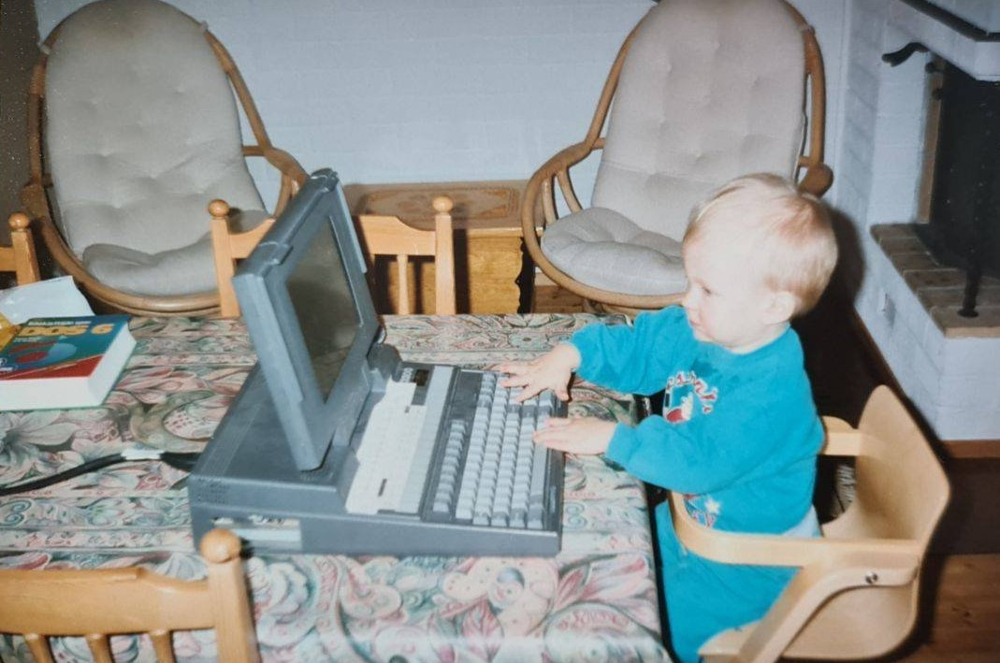

BackgroundThe curiosity
The curiosity
came first.
A long-standing interest in computers, a career on the metro and a path into cyber security.
The path here.
Before moving into technology, I worked driving the metro. Computers had been an interest for much longer, and that curiosity eventually became the focus of my career.
My ICT engineering background at JAMK University of Applied Sciences gave that interest a technical foundation in cyber defense and ethical hacking.
At Elisa since 2022, I now work as a Senior Cyber Security Analyst, leading daily security operations and supporting investigations and analyst development.

The curiosity came first.
Me at a computer, long before the incident response playbooks.
When the lab finally clicks.
A small dose of Dimitri after a good day in the lab.